Overview
In this project, I created my own rasterizer with various sampling methods and analyzed its efficacy in the context of every method. I was able to understand why some techniques are better from different perspectives like memory and speed. It was also really cool to zoom into the images and play around with different methods and see, in real time, the stark differences.
Section I: Rasterization
Part 1: Rasterizing single-color triangles
Rasterization is a process in which we are given information such as vertices to determine what data represents pixels on the screen. When rasterizing a triangle, we are given 3 points with x, y coordinates and a color to fill the triangle with. These 3 points are given in no specific order, so we must locally order them to travel in a consistent direction. Else, the following math will not work as intended, because when we go on and do vector subtraction, differing orientation of the points will always result in inaccurate results. We find the tangent lines that are the sides of the triangle and also find the normal vector perpendicular to them. This information will allow us to calculate the bounds of our triangle, so our next step is to find which points are located within the triangle. Before we do that, we want to optimize the portion of the grid we loop over, we calculate the x and y minimum and maximum bounds of the provided coordinates. Otherwise, we’d be looping over parts of the grid with nothing that we do not care about and waste time. As we loop over each point in this grid, we add 0.5 to our current point coordinates to locate the center of the grid. To determine whether the current point is in our triangle, we take the dot product of the line vector between this current point and each of our three input points and the normal vectors we calculated earlier. If all these values are greater than or equal to zero, we can conclude that this point is indeed within the triangle. When this is the case, we color that pixel. My algorithm is no worse than one that checks each sample because I calculate the minimum and maximum values for each of the x and y axis. My for loop is bounded by these constraints.
|
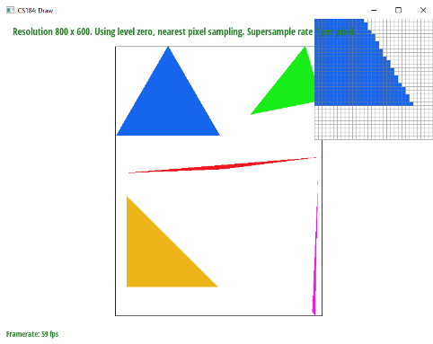
Edge of blue triangle for test 4
|
Part 2: Antialiasing triangles
As we saw in Part 1, when we implement simple rasterization, we can get jagged edges such that they are not smooth and very pixelated. Supersampling is a very useful tool because we examine multiple samples for each pixel, thus being able to provide more information about the image. This is particularly important on the edges of the triangle, where there isn’t just one color dominating the area. After implementing supersampling, we should not expect such a jagged edge, but rather some lighter colored pixels that smooth out the border.
My supersampling algorithm first made sure to modify the resize the buffers by the sample rate. Previously, we were just filling in a color for each pixel so simply having the size of product width and height was enough. Now, we want to collect more data per point, which is the sample rate. As for modifying the Task 1 rasterization algorithm, I looped through two nested loops of size square root of the sample rate inside the two nested loops that loops over each bounding box of triangles. I modified the current point we are iterating over by adding the fraction of how much of the squared root sample rate we’ve iterated over. Using the same normal vectors we did in the previous task, we take the dot product of the line vector from this point to each input point and its normal vector. If all three dot products are greater than or equal to zero, that means this point is in the triangle. This is very similar to Task 1. However, a key difference here is that we no longer directly fill the pixel with a color, but add this color information to the sample buffer. When resolving to the frame buffer, I pulled the resulting colors from the buffer for each point, summed their RGB values, and averaged it to choose the final color for that pixel. For filling the pixel, I used the code from the spec to fill in pixel color if the point is on screen.
|
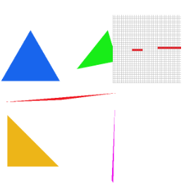
Sample rate 1 for test 4
|
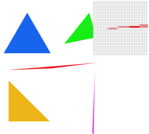
Sample rate 2 for test 4.
|
|
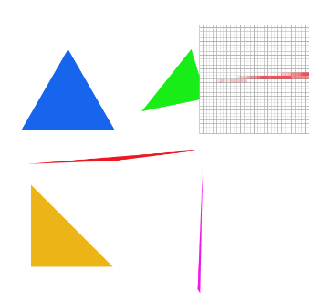
Sample rate 3 for test4.
|
We are looking at the left corner of the red triangle. When the sample rate is equal to 1, only 1 sample is not enough to account for the abrupt decreasing color distribution from a sea of red. But, when we increase the sample rate to 4, we see the missing pixels now a light shade of red and better shows the picture. Yet, it isn’t “great.” In the lowest row, we see a row of pixels hanging on to the triangle by its right corner. This is not smooth and shows that even a sample of 4 isn’t enough. This part of the image is so sharp that only on the 16 samples version are all the images more connected, demonstrating that the more we sample, the better distribution of colors we get connecting all the pixels together because the algorithm has more information regarding its surroundings to fill in each pixel.
Part 3: Transforms
I modified my cubeman to be jumping in the air with his legs up and hands pointing upwards. To move the legs up in the air I rotate the bottom half of his legs. And to show the hands pointing up, I scaled the quadrilateral and rotated, as well as rotating the upper half of the hand. One of the legs overlaps with the other legs and I thought this was cool because you usually don’t see both legs in real life when you jump in the air like this.
Section II: Sampling
Part 4: Barycentric coordinates
Barycentric coordinates are a way we use to plot points within a triangle. The goal of the equation is to find three constant coefficients representing the weights, or pull, each input point has on the current point. All weights must add to 1. This helps us color in the triangle more complexly because the shade of color being used is no longer a constant and varies throughout the triangle. For our implementation, we use the code from Task 2 and add modifications. In order to find the barycentric coordinates, we want to solve a system. So we take the inverse of a matrix containing information on the x, y, and z coordination of the 3 input points. Then we follow the code from Task 2 to check whether or not the point is within the triangle. If it is, we calculate the barycentric coordinates by multiplying the inverse matrix with the point we’re on. We then take each coordinate and multiply it by the color of each point that was passed in.
Let’s look at the bottom left corner of the triangle below. That corner is blue. So any point in that area of the triangle has a larger weight of that point, also giving it a larger weight of that point’s color, thus making it more and more blue as you go closer to it. The same logic applies at the other points. Now, in the middle, when it is equidistant from all three points, there is no longer one defining color, but rather a light mesh of all three colors.
|
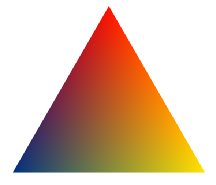
Example triangle
|
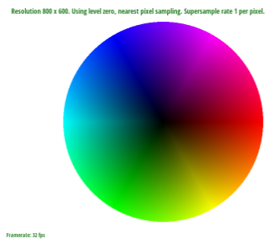
Color wheel
|
Part 5: "Pixel sampling" for texture mapping
Pixel sampling is a process used to get the final color for each pixel within an image. We take the work from the previous task and add on to that. To perform texture mapping, you create two new Vector2D objects that contain the passed in texture variables. We take how we calculated barycentric weights in the previous problem and multiply that by our u and v vectors. We take this vector and pass it into one of the sampling methods.
Sample nearest works by scaling the texture coordinates by height and width, then rounding the coordinates and getting the texel value. In other words, we get the color that’s closest to the pixel. Sample bilinear works by doing the same procedure but on the four closest texels and lerping the resulting colors. We get the texel of the bottom left, bottom right, top left, and top right and horizontally lerp the to get the top and bottom and finally vertically lerp those two to get the final color.
Below we compare nearest sampling with bilinear sampling for a sample rate of 1 and 16 for each. The top row shows that with a sample rate of 1, bilinear sampling outperforms nearest sampling. On the left, the colors are more stark and sharp--it has not done such a great job at taking into consideration colors around it. Even when we increase to a sample rate of 16, both images do significantly improve and the quality difference between the two also significantly decreases, bilinear sampling outperforms nearest sampling by still having a smoother blend of pixel colors. So we can see that there is a large difference between the two methods when there’s a stark contrast in colors with a low sample rate.
|
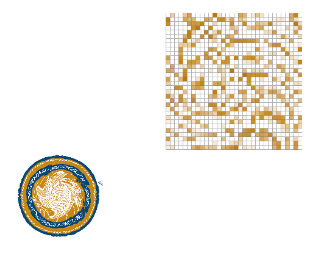
Nearest sampling with sample rate=1
|
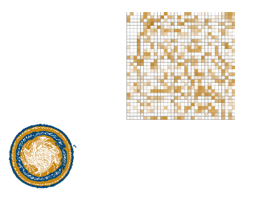
Bilinear sampling with sample rate=1
|
|
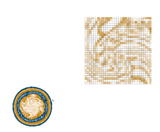
Nearest sampling with sample rate=1
|
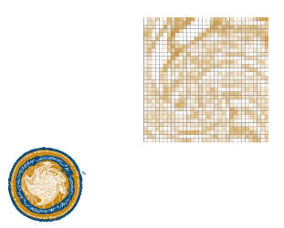
Bilinear sampling with sample rate=16
|
Part 6: "Level sampling" with mipmaps for texture mapping
Level sampling is the process in which we use mipmapping levels in texture mapping to determine which texel we get. This takes advantage of computing information that is closer with detail and not so much for stuff that’s less relevant, or further. In order to get level, we calculate the log base 2 of the square root of the norms of du and dv with respect to x and y. To obtain these values, we take the inverse system logic from earlier and calculate dx and dy values by adding one to the x and y parameters in different steps and taking the dot product. Finally, we take these new values and dot product them by the u and v vectors that were inputted and subtract them to get the final du/dx, dv/dx, du/dy, dv/dy values.
With regards to speed, pixel sampling is the fastest of the three. By only looking at one point and assigning a color, there is not much work involved. With regards to level sampling and number of samples per level, level sampling is faster because it does not need to look at multiple samples per pixel. With regards to memory usage, once, again, pixel sampling uses the least memory because you just need to store the point and color info. Level sampling has second most memory usage and number of samples per pixel is third because you begin to store more texture information and sample more points per pixel leading to storing significantly more info. With regards to antialiasing power, the number of samples per pixel provides the best results because of how it captures more samples per pixel, such as near edges, then it is level sampling, and finally pixel sampling is last because it is very basic. In conclusion, the number of samples per pixel takes more space and time, but gives us better results.
|
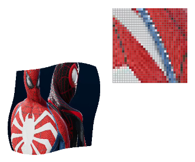
L_ZERO and P_NEAREST.
|
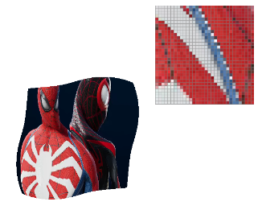
L_ZERO and P_LINEAR
|
|
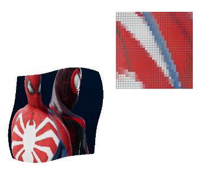
L_NEAREST and P_NEAREST
|
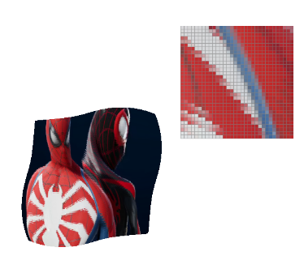
L_NEAREST and P_LINEAR
|